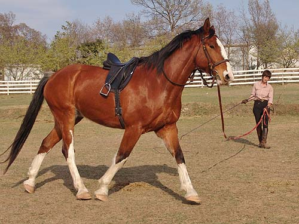

Kanuk - Training We'll start Kanuk out at the beginning
and see where that takes us.
He was very obedient about lunging
and offered a few moves that
showed us we'll move along fairly fast.
He was distracted when his pasture mates
galloped along their fence line,
but it was a windy day and he's getting
to know us. No blow ups and only
one break into the canter when his buddies
came running up and surprised him.
The next time we'll lunge in side reins,
and maybe be up on him by the
end of the session. I want to build his
trust and not throw everything at him
at once in a new place. It's a method
that has worked well, so no need
to change it just because we know he's
got more training than the others.
Kanuk is a big boy, but so nice about
being worked around and standing patiently.
When Chrissie started lunging him
he seemed to think that he was supposed to trot off. She spent time encouraging
him to give her a relaxed but forward walk.
Once he understood what was wanted,
he seemed happy to do what was asked.
Sometimes distracted by his friends
in the other field, but Chrissie would always bring his attention back
to her.
He has a lovely walk and started relaxing
and reaching forward and down a bit.
That one ear focused on Chrissie.
He's aware of his size and people's
space. He hasn't tried to take advantage of that.
And some trot work.
The arena isn't even, but he had no
trouble balancing and not getting on the forehand.
Still a bit of interest in his friends.
But then he started to stretch over
the top and reach down.
A bit of an odd angle, but he's stretching
forward and down and correctly lifting his shoulders and not putting his
weight all on the forehand.
He seemed comfortable with reaching
all the way down but staying in the trot.

To the left he wasn't willing to stretch
down yet. Just a little more tense in that direction.
Not as upright and bending like I'd
like, but it's nice to see the crossover ability of that inside hind leg.
More nice stretch at the trot.
Well, it's not always the horse that's
distracted....
Just a walk over while she led him
around to cool off a bit.